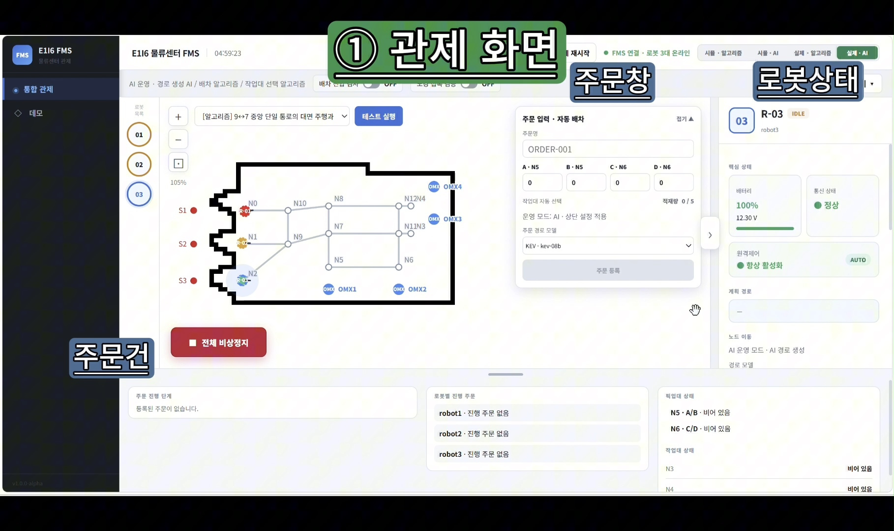
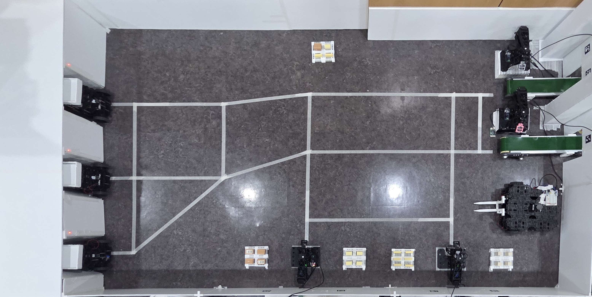
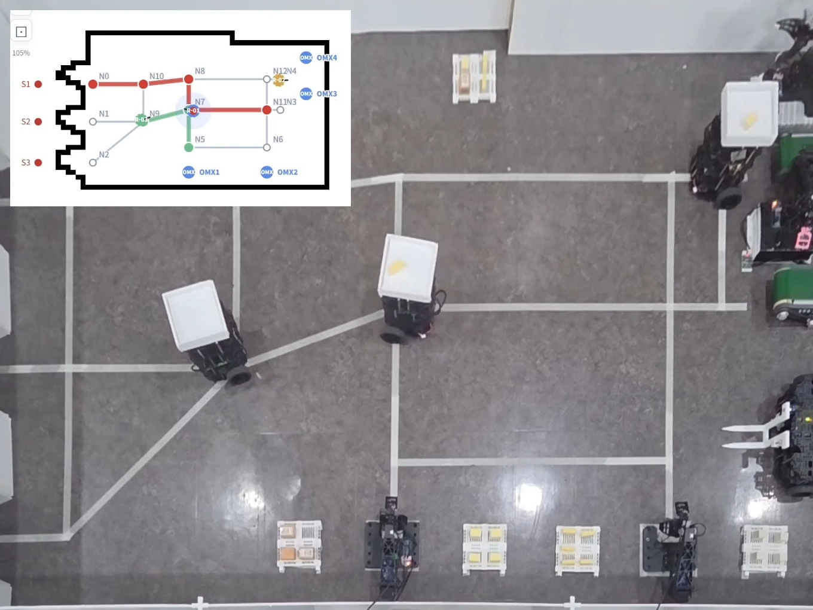
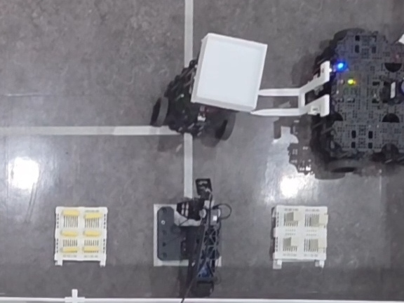
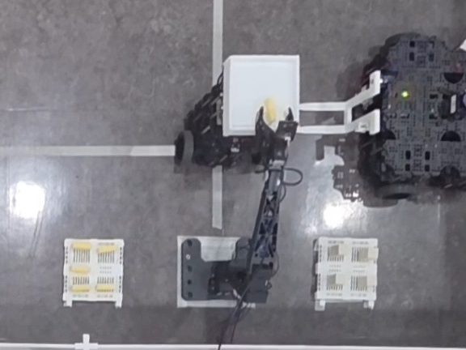
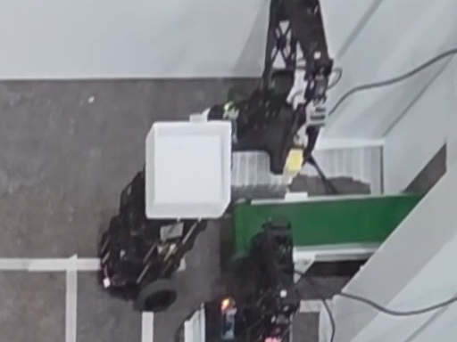

Communication
- DDS Discovery 제한 및 Zenoh Bridge 기반 ROS 2 Topic/Action 통신 분리
- MQTT 기반 OMX 작업 명령 전달 및 응답 처리
01 - MULTI-ROBOT - FMS
운반 AMR 3대와 재고 보충 AMR 1대, OMX 로봇팔 4대를 연동한 물류 시스템
WHAT I DID
PROJECT IMAGES

주문 접수, 로봇 위치 및 상태 관리, 물류 시나리오 실행을 위한 웹 관제 화면

운반 AMR 3대, 재고 보충 AMR 1대와 로봇팔 4대로 구성한 물류 자동화 환경
SYSTEM FLOW
주문 접수 및 작업 요청
배차, 작업 할당 및 상태 관리
주행, 도착 및 정밀 정렬
로봇팔 적재 및 하역
작업 완료 및 FMS 상태 갱신
PROBLEM SOLVING
여러 AMR이 동일 네트워크에서 ROS 2 통신을 사용함에 따라 로봇별 Discovery 범위와 제어 명령 전달 경로를 분리해야 했습니다.
로봇별 DDS Discovery 범위를 제한하고, Zenoh Bridge를 활용해 필요한 Topic과 Action을 FMS로 전달하도록 통신 구조를 구성했습니다.
로봇별 ROS 2 Topic과 Action 인터페이스를 분리해 통신 간섭 없이 FMS에서 개별 로봇을 제어 및 관제하는 구조를 적용했습니다.
TASK FLOW & DEMO
FMS의 작업 요청에 따라 AMR 주행, ArUco 기반 정밀 위치 정렬, OMX 적재 및 하역 작업을 연동했습니다.
기능별 실행이 가능한 데모 탭을 구성하고, 실제 로봇을 활용해 물류 작업 시나리오를 검증했습니다.

다중 로봇의 위치와 이동 경로를 포함한 물류 작업 환경

물류 작업 위치에 도착한 운반 로봇과 OMX

ArUco 기반 정밀 위치 정렬을 마친 AMR에 물품을 적재하는 OMX

운반 로봇이 도착 후 OMX 로봇팔이 컨베이어 벨트로 하역
SYSTEM VALIDATION
AMR 4대와 OMX 4대를 연동하여 주문 접수부터 적재, 이송, 하역 및 재고 보충으로 이어지는 물류 자동화 시스템을 구축했습니다. 최종 시연에서는 FMS를 통한 로봇 주행, ArUco 기반 정밀 위치 정렬, 작업 명령 및 응답 처리 과정을 검증했습니다.
팀에서는 배차, 경로 생성, 교통 판단에 대해 기존 알고리즘과 AI 기반 방식을 비교하고, 처리 성능과 안정성을 중심으로 물류 환경에서의 적용 가능성을 평가했습니다.
비교 조건에서는 기존 알고리즘이 더 적합한 결과를 보였으며, AI 기반 방식의 추가적인 성능 이점은 입증되지 않았습니다.
이에 기본 운용에는 기존 알고리즘을 유지하고, 복잡한 예외 상황에서 AI를 보조적으로 활용하는 방향을 향후 과제로 설정했습니다.